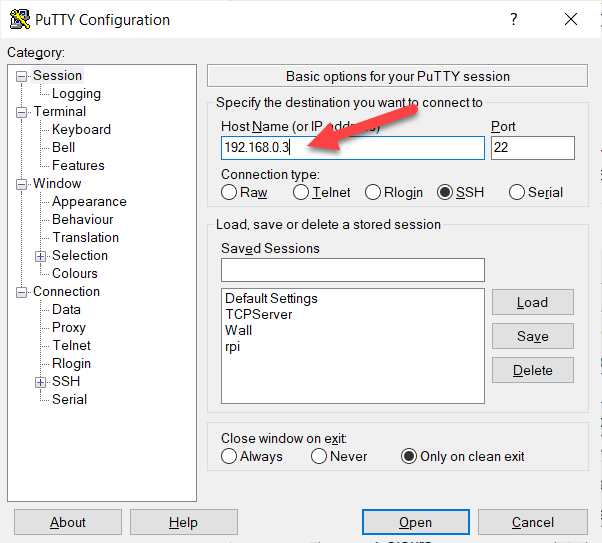
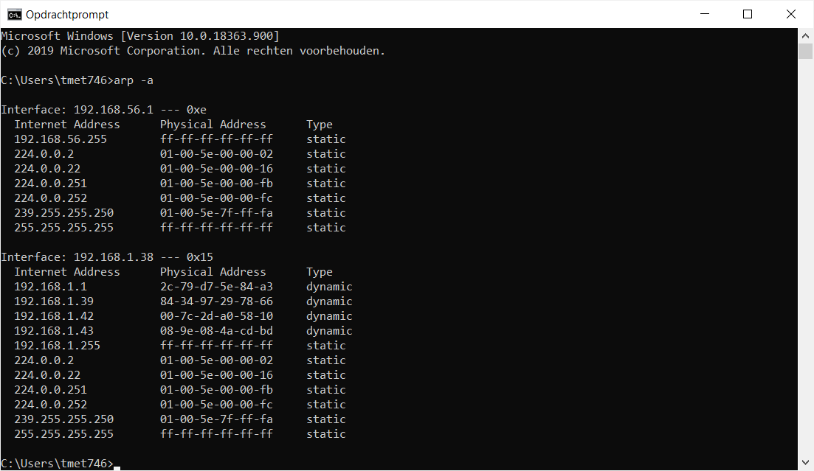

ARP ofwel het Address Resolution Protocol, is een protocol binnen de datalinklaag van het TCP/IP model dat computers, die allemaal op hetzelfde LAN zijn aangesloten, in staat stelt verbinding te maken met andere computers op dat LAN, zonder hun MAC adres te kennen.
Binnen TCP/IP zijn er twee adresseringssystemen in gebruik. Het ene situeert zich op de datalinklaag en heet MAC adressering. Het andere bevindt zich op de netwerklaag en heet IP adressering. Over IP adressering zullen we het in het volgend hoofdstuk uitgebreid hebben.
| Application |
| Transport |
| Network (IP adressering) |
| Datalink (MAC adressering) |
| Physical |
Binnen een LAN worden computers geadresseerd met hun MAC adres, buiten het LAN met hun IP adres. Maar… een computer heeft, als hij verbonden is met een TCP/IP netwerk, wel beide adressen. Zelfs al is hij enkel verbonden met een LAN, toch heeft hij een IP adres.
Meestal worden programma’s geschreven zodat ze zowel computers binnen als buiten het LAN kunnen adresseren. Het is dan ook logisch dat de meeste applicaties gebruik maken van IP adressering en niet van MAC adressering.

Maar wat als je nu twee computers in een lokaal netwerk hebt die verbonden zijn met elkaar door middel van een switch? Zoals je weet kan een switch enkel overweg met MAC adressen… En in deze situatie hebben we een computer die een andere computer adresseert met behulp van een IP adres… Hoe weet de zender nu welk MAC adres er bij dit IP adres hoort zodat hij bij het maken van het frame het destination MAC adres kan invullen?
Het antwoord is ARP.
Als we zouden klikken op de knop ‘Open’ dan zou het besturingssysteem eerst nagaan of het IP adres (192.168.0.3) nog niet bestaat in de lokale ARP tabel. De ARP tabel is een soort van tijdelijk geheugen waarin er in de ene kolom IP adressen staan en in de andere MAC adressen. Als er een overeenkomst is gevonden dan kan de datalinklaag het frame opvullen met source en destination MAC adres.
Je kan jouw arp tabel opvragen door in Windows het commando arp -a in te geven. Op het zicht kan je al onmiddellijk zien dat het lokale adres 192.168.1.38 is en er al communicatie is geweest met 192.168.1.1, 192.168.1.39, 192.168.1.42 en 192.168.1.43 binnenin het LAN.

Als er geen overeenkomst gevonden is in de ARP tabel dan stuurt de netwerkkaart van computer A eerst een ARP request. Een ARP request is een broadcast frame. Een broadcast frame is een frame dat gestuurd wordt naar alle computers in het lokale netwerk.
Het broadcastframe dat gestuurd wordt bevat de volgende gegevens:
source MAC: AA:BB:CC:DD:EE:FF, source IP: 192.168.0.2
destination MAC: ff:ff:ff:ff:ff:ff (broadcast), destination IP: 192.168.0.3
De switch ontvangt dit frame, ziet dat het gestuurd wordt naar een broadcast MAC adres en forward dit naar alle poorten. Iedere aangesloten machine ontvangt het frame op zijn netwerkkaart.
Iedere netwerkkaart controleert of zijn IP adres 192.168.0.3 is. Indien niet, dan negeert hij de broadcast en laat hij het frame vallen (= frame drop). Als dat wel het geval is stuurt hij een unicastpakket terug:
source MAC: 00:11:22:33:44:55, source IP: 192.168.0.3
destination MAC: AA:BB:CC:DD:EE:FF, destination IP: 192.168.0.2
De switch ontvangt opnieuw het frame, ziet dat het gaat over een specifiek MAC adres, kijkt in zijn MAC address table welke poort hiermee overeenkomt en stuurt het door.
Computer A ontvangt het frame en werkt zijn ARP tabel bij. Hij weet nu dat 00:11:22:33:44:55 overeenkomt met 192.168.0.3. Vanaf nu kan de nodige MAC adres informatie opgevuld worden voor de datalinklaag en kunnen frames zeer efficiënt uitgewisseld worden over het netwerk.
De aandachtige student zal misschien opmerken dat we ARP niet nodig hebben als we het destination MAC adres zouden opvullen met het broadcast MAC adres ff:ff:ff:ff:ff:ff. Maar... dat heeft uiteraard een zeer belangrijk nadeel: de switch gedraagt zich dan als een hub. Alle frames worden doorgestuurd naar alle computers in het netwerk waardoor dit zeer inefficiënt verloopt.